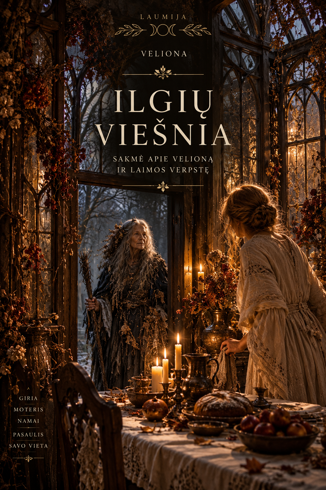
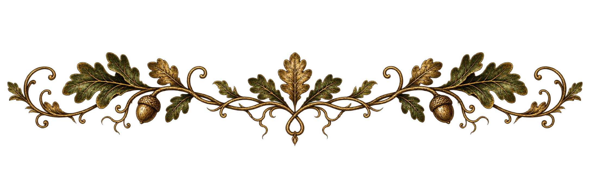

Velionos laikas · Laumija
Sakmė • Ilgių viešnia
Viename kaime gyveno moteris, gera verpėja ir audėja. Jos drobės buvo plonos, skrynios pilnos, namuose nei duonos, nei šilumos netrūko. Tik svečiai retai užsukdavo. Moteris vis darbo turėjo, vis jai kas trukdė. Atėjusiam vos prisėdus, jau žiūrėdavo, kada tas namo susiruoš.
Atėjo Ilgės. Kaimynai minėjo mirusius savuosius, ruošė vakarienę. Moteris irgi išsivirė valgio, atsiriekė duonos. Jau sės prie stalo, tik kažkas į duris beldžia.
Pravėrusi pamatė senolę. Skara sudrėkusi, sijono apačia žemėta.
— Įleisk, dukrele. Sušilsiu, prie stalo pasėdėsiu.
— Iš kur tokia vėlyva?
— Iš toli. Tavo savuosius pažinojau.
— Mano savieji kapuose.
— Tai dėl jų ir atėjau.
Moteris durų plačiau neatvėrė.
— Gyviems vos spėju, dar mirusiais rūpintis. Eik sau, iš kur atėjusi.
Senolė pažvelgė į stalą jai už nugaros.
— Duonos turi. Vietos pagailėjai.
Nusigręžė ir nuėjo. Moteris užstūmė skląstį, pavalgė ir atsigulė.
Nežinojo tą vakarą pačią Velioną nuo slenksčio nuvariusi.
Naktį moterį pažadino langinės bildėjimas. Dar pagulėjo, tikėdamasi, kad liausis, bet bildesys vis kartojosi. Atsikėlė, užsimetė skarą ir išėjo pažiūrėti.
Kieme tylu, vėjas nepučia. Langinė užkabinta. Moteris patraukė kablį, užkišo pagaliuką, kad nejudėtų, ir grįžo gulti.
Vos akis sumerkė, vėl trinktelėjo.
— Palaukit, išdykėliai, pagausiu!
Išskubėjo laukan, tikėdamasi kaimo bernus užklupti. Tačiau po langu nieko nebuvo. Pagaliukas vietoje, langinė nejuda. Apėjo trobą, už kampo pasižiūrėjo. Niekur nieko.
Grįžusi dar nespėjo nuo durų pasitraukti, kai į jas kažkas triskart pabeldė. Tuoj atplėšė. Slenkstis tuščias. O kitame trobos gale vėl sudundėjo langinė.
Moteris užstūmė skląstį. Daugiau laukan nebėjo. Atsisėdo prie krosnies ir ligi ryto klausėsi, krūpčiodama nuo kiekvieno bildesio.
Kitą naktį vėl tas pats. Trečią dar ir palei langus kažkas vaikščiojo. Prieina, sustoja, pastovi, paskui eina toliau. Moteris gulėjo antklodę ligi smakro užsitraukusi, nė pajudėti nedrįso.
Rytą išėjo pėdsakų ieškoti. Žemė šlapia, jos pačios pėdos aiškiai matyti, o svetimų nėra.
Pasikvietė kaimynę pernakvoti. Abi girdėjo langinę daužantis, abi klausėsi žingsnių už sienos. Kai į duris pasibeldė, kaimynė tik suėmė ją už rankos. Taip abi ir prasėdėjo ligi šviesos. Daugiau kaimynė nakvoti nebeatėjo.
Ilgos pasidarė rudens naktys. Dieną moteris prie darbo užsnūsdavo, siūlus suveldavo, o vakarop vis žvilgčiodavo į langus. Jau ir lovos nebesiklodavo, sėdėdavo prie krosnies apsisiautusi skara.
Prasidėjus adventui, vieną vakarą vėl pasibeldė. Moteris nė nekrustelėjo.
— Įleisk, šeimininke. Sušalau.
Pakėlė galvą. Iki šiol už durų niekas neprakalbdavo.
— Kas ten?
— Nakvynės prašau.
Priėjusi pravėrė duris. Už jų stovėjo moteris su verpste ir linų ryšulėliu.
— Užeik. Tik pas mane nepailsėsi.
Viešnia nusisiautė skarą, atsisėdo ant suolo.
— Žinau, kas tau miegoti neduoda. Per Ilges viešnią išvarei.
Šeimininkė nuleido akis.
— Išvariau. O iš kur tu žinai?
— Aš Laima.
Moteris prisėdo šalia.
— Pasakyk, ką daryti. Jau ir nakties bijau.
Laima atrišo ryšulėlį, paskleidė ant kelių iššukuotus linus.
— Suverpsi ir išausi staltiesę. Iki Kūčių kad būtų baigta. Verpdama tylėk, nors ir kas už lango dėtųsi. Kepdama duoną, atidėk kepalėlį tam, kas jos neturi. O Kūčių vakarą užtiesk stalą ir palik vietos viešniai.
— Ar ji ateis?
— Tu tik durų neužstumk.
Šeimininkė nuėjo duonos atnešti. Atsigręžusi viešnios neberado. Tik ant suolo gulėjo linai ir verpstė.
Kitą vakarą moteris sėdo verpti.
Kurį laiką buvo ramu. Paskui trinktelėjo langinė. Moteris krūptelėjo, siūlas nutrūko. Jau norėjo bartis, bet susičiaupė, sudūrė galus ir verpė toliau.
Į duris pasibeldė. Pirma tyliai, paskui smarkiau. Ji neatsakė.
Tada už lango kažkas atsiduso. Moteris nuleido rankas. Taip jos motina atsidusdavo, pavargusi vakare prie ratelio sėsdama.
Ilgai klausėsi, ar dar neišgirs. Paskui akis nusišluostė ir vėl paėmė siūlą.
Nuo tada kas vakarą verpdavo. Už durų žingsniai pasigirs, į langą kas pabels, ji tik krūptelės, bet darbo nemes.
Kepdama duoną, padarė ir mažesnį kepalėlį. Nunešė kaimo gale gyvenusiai našlei. Ši pakvietė prisėsti. Moteris jau buvo besakanti neturinti laiko, tačiau pasiliko. Kol duona atvėso, abi ir išsikalbėjo.
Suverpusi linus, apmetė stakles. Audė dienomis, kol pro langą matėsi. Prieš Kūčias staltiesė jau buvo išskalbta, išdžiovinta ir sulankstyta.
Kūčių vakarą užtiesė stalą, sudėjo valgius, atriekė duonos. Priešais save paliko vietos ir pristūmė suolą.
Durų neužsklendė.
Jau temo, kai tyliai pasibeldė. Moteris atsikėlė atidaryti. Ant slenksčio stovėjo ta pati senolė.
— Užeik. Laukiu.
Paėmė jos šlapią skarą, pakabino prie krosnies. Pasodino prie stalo, pastūmė duoną.
Senolė perbraukė delnu staltiesę.
— Pati audei?
— Pati. Laima linų davė.
Viešnia linktelėjo ir atlaužė duonos.
Ilgai jos tą vakarą sėdėjo. Moteris klausinėjo apie savuosius, o senolė pasakojo ir apie motiną, ir apie senelę, prisiminė net seniai užmirštus jų žodžius.
Besiklausant moteriai apsunko akys. Padėjo galvą ant rankų ir užmigo.
Pabudo jau švintant. Troboje buvo tylu, viešnios nebebuvo. Ant stalo gulėjo atlaužta duona, o staltiesėje likęs drėgnas jos delno pėdsakas.
Pirmą kartą nuo Ilgių moteris buvo išmiegojusi visą naktį.
Nuo tada per Ilges ji palikdavo ant stalo duonos, dubenį valgio ir vietą ant suolo.
O langinės naktimis daugiau nebesibeldė.
Velionos laikas · Laumija
2. Veliona baltų pasaulėžiūroje
Velionos vardas mus pasiekė iš negausių rašytinių liudijimų. Apie 1582 metus Jonas Lasickis paminėjo Vieloną, siejamą su mirusiųjų maitinimu. Jo aprašyme jai skiriamos aukos, kai vaišinamos vėlės. Šis ryšys su mirusiaisiais ir jų vaišėmis išliko svarbiausia Velionos pažinimo gija. [1, 2]
Dėl paties vardo tyrinėtojai nesutaria. Vieni jame atpažįsta dievybę, kiti svarsto, ar tai galėjo būti bendrinis mirusiojo pavadinimas. Nijolė Laurinkienė Velioną nagrinėja kaip vėlių globėją, gretindama ją su latvių Vėlių mote. [1, 2]
Laumijoje iš šių nuotrupų kuriame moterišką Velionos paveikslą. Ji ateina prie stalo, prie kurio sėdėjo ankstesnės kartos, primena jų vardus ir klausia, ką iš jų gyvenimo nešamės toliau. Mūsų Veliona jungia protėvių atmintį ir XIII Mirties arkano virsmą. Sakmė „Ilgių viešnia“ yra šios autorinės interpretacijos dalis.
Velionos laikas · Laumija
3. Velionos laikas Rėdos rate
Po Medeinos girios ateina Ilgių rimtis. Lapai jau sugulę ant žemės, laukai ištuštėję, o vakarai vis ilgiau laikomi namų šviesoje. Tai metas, kai dažniau prisimename tuos, kurių prie mūsų stalo nebėra.
Laumijos Rėdos rate Velionos laiką skaičiuojame nuo lapkričio 1-osios iki gruodžio 20-osios. Advento dalyje ją lydi Laima, o ties žiemos saulėgrįža prasideda Raganos laikas. Tokia metų rato sandara priklauso Laumijos sistemai.
Medeina kvietė sustoti ir išgirsti savo ribą. Veliona klausia, kas per tą laiką iš tiesų pasibaigė. Gal pasikeitė šeima, nutrūko ryšys, baigėsi darbas. Gal išoriškai gyvenimas liko toks pats, tačiau moteris jau nebegali jame būti ankstesniu būdu.
Šiuo metu namuose susitinka keli laikai. Yra tai, ką paveldėjome, tai, kuo gyvename šiandien, ir vieta tam, kas dar atsiras. Veliona kviečia atpažinti kiekvieno jų vietą.
Velionos laikas · Laumija
4. XIII arkanas. Pabaiga ir virsmas
A. E. Waite’o aprašytame XIII arkane raitelis neša juodą vėliavą su rože. Autorius rožę sieja su gyvybe, o tarp dviejų stulpų tolumoje šviečiančią saulę su nemirtingumu. Greta mirties jis aptaria ir sąmonės pasikeitimą. [3]
Laumijoje šį arkaną siejame su negrįžtamu gyvenimo formos virsmu. Jame svarbu atskirti tris dalykus.
Pabaiga. Kažkas iš tiesų baigėsi. Santykis, darbas ar gyvenimo tarpsnis jau negali tęstis vien todėl, kad moteris dar jo laukia.
Mirtis kaip metafora. Suyra ankstesnis atsakymas į klausimą „kas aš esu?“ Užauginusi vaikus moteris gali nebežinoti, kam skirti dienas. Pasibaigus santuokai, ilgai išlieka įpročiai, kuriais buvo kuriamas bendras gyvenimas.
Transformacija. Iš likusių ryšių, patirties ir naujų pasirinkimų pamažu susidaro kitokia gyvenimo tvarka. Joje gali išlikti daug senojo gyvenimo, tačiau keičiasi pačios moters vieta.
Šios patirtys gali persipinti. Nauja kasdienybė jau kuriama, o netekties skausmas dar tebėra šalia. Virsmas turi savo kainą: galima prarasti saugumą, įprastą vaidmenį, kitų pritarimą ar ilgai puoselėtą ateities vaizdą.
Negrįžtamumas reiškia, kad patirtis jau įvyko. Net sugrįžusi į tuos pačius namus moteris parsineša tai, ką išgyveno ir suprato.
Veliona moko atpažinti, kada viena moters gyvenimo forma jau mirusi, nors pati moteris tebėra gyva.
Velionos laikas · Laumija
5. Vidinė Veliona
Kai gyvenimas pasikeitė, o įpročiai liko
Moteris gali ilgai gyventi tarp tų pačių daiktų ir nepastebėti, kad jos vieta namuose jau pasikeitė. Vaikai užaugo. Žmogaus, kuriam kasdien virė vakarienę, prie stalo nebėra. O rankos dar siekia antro puodelio, sekmadienį vis dar ruošiama per daug maisto.
Kartais pasikeitimas mažiau matomas. Moteris nebenori būti ta, kuri visus sutaiko, viską primena ir visada nusileidžia. Ji tebemyli savo žmones, tačiau ankstesni susitarimai jai tapo per ankšti. Juos keisdama ji turi susitikti ir su artimųjų lūkesčiais, ir su savo įsitikinimu, kokia turėtų būti gera moteris.
Velionos klausimas paprastas: kas mano gyvenime pasibaigė, nors kasdien vis dar elgiuosi taip, lyg tęstųsi?
Ką kainuoja atsisveikinti
Kartais sunkiausia prarasti ateitį, kuri atrodė savaime suprantama. Bendrus namus, darbą iki pensijos, šeimos susitikimus prie to paties stalo. Tenka atsisveikinti ir su tuo, kas buvo, ir su tuo, kas jau nebebus.
Moteriai reikia vietos pasakyti: tai man buvo brangu. Aš to nenorėjau prarasti. Dar nežinau, kaip gyvensiu toliau.
Greta gailesčio gali atsirasti palengvėjimas. Ypač tada, kai pasibaigęs laikotarpis buvo sunkus. Abu jausmai gali priklausyti tai pačiai istorijai.
Ką ji išsaugo
Gali likti mylimas darbas, draugystė, senas receptas, įprotis sekmadienį pasivaikščioti. Net pasibaigus santykiui lieka nugyventas laikas ir tai, ką moteris iš jo išmoko.
Brandi Veliona geba saugoti tai, kas brangu, ir pripažinti tai, ko nebeįmanoma tęsti. Ji gali ilgėtis ankstesnio gyvenimo, kartu po truputį kurdama dabartinį.
Velionos šešėlis
Kartais visos jėgos skiriamos tam, kad niekas nepasikeistų. Namuose saugoma tvarka, kuri kažkada turėjo prasmę, tačiau dabartiniams jų gyventojų poreikiams vietos vis mažiau. „Pas mus visada taip buvo“ tampa atsakymu į kiekvieną prašymą.
Kitas kraštutinumas atsiranda tada, kai norisi vienu sprendimu sunaikinti visus ankstesnio gyvenimo ženklus. Išmesti daiktus, nutraukti ryšius, išvažiuoti. Atrodo, kad tuomet nebereikės susidurti su tuo, kas įvyko.
Šešėlį čia atpažįstame iš santykio su praeitimi. Nei ilgesio trukmė, nei saugomi mirusio žmogaus daiktai savaime nereiškia, kad moteris įstrigo.
Ką saugau iš meilės? Ko laikausi iš baimės? Kuriam sprendimui dar reikia laiko?
Velionos laikas · Laumija
6. Protėvių palikimas
Iš šeimos gauname daiktus, pasakojimus, mokėjimus. Taip pat gauname sakinius, kurių ilgai net nepastebime: svečiui atiduok geresnį kąsnį; apie namų bėdas nekalbėk; pirmiausia pasirūpink kitais.
Vienas toks sakinys gali priminti dosnumą, kitas slėgti nutylėta patirtimi. Kartais tame pačiame palikime yra abu dalykai. Močiutė mokėjo pasirūpinti žmonėmis, tačiau pati pagalbos neprašydavo. Motina išlaikė namus sunkiausiu metu, bet dukrai perdavė įsitikinimą, kad poilsį reikia užsidirbti.
Atminti šias moteris galima ir nesirenkant jų gyvenimo. Galima saugoti močiutės siuvinius, išmokti jos dainą, užrašyti jos vardą ir kartu nuspręsti, kad savo namuose apie sunkumus kalbėsi.
Sakmėje moteris prie stalo sutinka viešnią, kuri dar prisimena jos savuosius. Ji išgirsta seniai užmirštus žodžius. Toks susitikimas palieka klausimą ir mums: ką iš savo šeimos istorijos dar norime sužinoti, kol yra ko paklausti?
Apmąstymui
Pasirink vieną šeimos daiktą, posakį ar paprotį. Užrašyk, iš ko jį gavai, kokį prisiminimą jis saugo ir kokią vietą nori jam skirti savo gyvenime. Jei šeimos istorijos nežinai, pradėk nuo to, ką žinai apie save.
Velionos laikas · Laumija
7. Sakmės simboliai
Stalas ir duona. Mirusiųjų vaišinimo liudijimai susieja Velionos vardą su maistu ir bendru stalu. [1, 2] Sakmėje duonos moteriai netrūksta. Keičiasi jos noras dalytis tuo, ką turi, ir skirti kitam vietos šalia savęs.
Slenkstis ir durys. Ties slenksčiu moteris pirmą kartą atsisako viešnios. Vėliau pati prie tų durų klausosi, kas ateina. Per Kūčias ji jau pasitinka senolę. Tos pačios durys parodo pasikeitusį jos santykį su viešnia.
Naktis ir bildesiai. Sutrikdyta namų ramybė priverčia moterį sustoti. Dienos darbais ji nebegali užgožti to, kas kiekvieną vakarą sugrįžta.
Verpstė, siūlas ir staltiesė. Mūsų sakmėje juos atneša Laima. Linai tampa siūlu, siūlas audiniu, o audinys užtiesiamas ant stalo, prie kurio atsiranda vietos viešniai. Moters pasikeitimas įgauna matomą pavidalą jos rankų darbe.
Delno pėdsakas. Rytą viešnios nebėra, tačiau lieka jos prisilietimo žymė. Sakmė baigiasi šiuo mažu liudijimu, kad nakties susitikimas įvyko.
Velionos laikas · Laumija
8. Ilgės. Atmintis prie stalo
Ilgės buvo rudens ir mirusiųjų pagerbimo šventė, švęsta nuėmus derlių. Visuotinėje lietuvių enciklopedijoje nurodomas spalio pabaigos ir lapkričio pradžios laikas. Žmonės rinkdavosi namuose ir kapinėse, rengdavo bendras vaišes, dalį maisto skirdavo mirusiesiems. [4]
Šiame paprotyje atminimas turi apčiuopiamą vietą. Duona kepama, maistas dalijamas, mirusieji prisimenami tarp gyvųjų. Sakmės viešnia ateina būtent prie tokio stalo.
Šiandien Ilgių vakarui galima pasirinkti vieną šeimos pasakojimą. Prisiminti, ką žmogus mėgo, ką mokėjo, kokius žodžius kartodavo. Paruošti jo mėgtą valgį, pavartyti nuotraukas arba paklausti vyresnio šeimos žmogaus apie tai, ko dar nežinome.
Toks vakaras gali būti ir tylus. Atminčiai pakanka vietos, kurią jai sąmoningai skiriame.
Velionos laikas · Laumija
9. Lapkričio 2-oji. Vėlinės
Vėlinės yra mirusiųjų minėjimo diena. Lietuvoje jų papročiuose susipynė krikščioniškoji tradicija ir senesnis Ilgių palikimas. [5]
Aplankytas kapas, uždegta žvakė ar ištartas vardas suteikia prisiminimui pavidalą. Kartais to žmogaus trūksta kasdien, kartais prisiminimas sugrįžta tik išgirdus pažįstamą dainą ar pajutus jo namų kvapą.
Prisiminti galima ir sudėtingą ryšį. Žmogaus gyvenime galėjo būti švelnumo, klaidų, neištartų žodžių. Atmintyje telpa visa jo istorija.
Atminimo lapas
- Vardas.
- Vienas prisiminimas.
- Tai, ką iš šio žmogaus perėmiau.
- Tai, ko apie jį dar norėčiau paklausti.
Velionos laikas · Laumija
10. Lapkričio 11-oji. Šv. Martynas
Etnologo Liberto Klimkos surinktoje Pilviškių apylinkių medžiagoje Šv. Martyno diena minima kaip paskutinė rudens šventė. Su ja siejami žiemos pradžios orų spėjimai, o artėjančios ganiavos pabaigos laukdavo piemenukai. [6]
Laumijoje ši rudens riba kviečia pažvelgti į užbaigtus darbus. Kartais vieną darbą tuoj pakeičia kitas ir net nepastebime, kiek jau padaryta. Užbaigimui taip pat reikia savo vietos.
Galima užrašyti tris šiemet baigtus darbus ir prisiminti, kas padėjo juos atlikti. Padėkoti tam žmogui. Pripažinti ir savo pačios pastangas, net jei jų rezultato kiti nemato.
Ką šiemet jau galiu laikyti baigta?
Velionos laikas · Laumija
11. Nuo Velionos prie Laimos
Sakmėje Laima ateina tuomet, kai moteris jau pavargusi nuo ilgų naktų. Ji atneša linus ir darbą, kuriam reikia laiko. Kol atsiranda staltiesė, keičiasi ir moters kasdienybė: ji išgirsta motinos atodūsį, pasilieka pas našlę, laukia viešnios.
Advento laikui Laumijoje skiriame Laimos vakarus. Juose svarbus ruošimasis, rankų darbas ir tai, ką norime perduoti kitiems. Velionos atminties tema tęsiasi per gyvą veiksmą: išsaugotą receptą, savo rankomis surištą lėlytę, drauge praleistą vakarą.
Laimos praktikos ir pasiruošimas Kūčioms sudaro atskirą leidinio priedą „Laimos vakarai. Nuo advento iki Kūčių“.
Velionos laikas · Laumija
Šaltiniai
1. Nijolė Laurinkienė. „Vėlių deivė Veliona“, „Šiaurės Atėnai“, 2013. 2. „Veliona“, Mažosios Lietuvos enciklopedija. 3. A. E. Waite. „XIII. Death“, „The Pictorial Key to the Tarot“. 4. „Ilgės“, Visuotinė lietuvių enciklopedija. 5. „Vėlinės ar Ilgės“, Valstybinė saugomų teritorijų tarnyba, 2021. 6. Libertas Klimka. „Kalendorinių papročių pabiros Pilviškių apylinkėse“, „Lietuvos lokaliniai tyrimai“, 2023, p. 10–11.
Sakmė, archetipų jungtys, moters patirties apmąstymai ir siūlomos praktikos yra autorinė Laumijos kūryba. Istorinės žinios paremtos nurodytais šaltiniais.
Velionos laikas
Atmintis prie stalo
Galima saugoti tai, kas brangu, ir kartu kurti gyvenimą, kuris priklauso dabarčiai.
Laumija
Grįžti į žurnalą